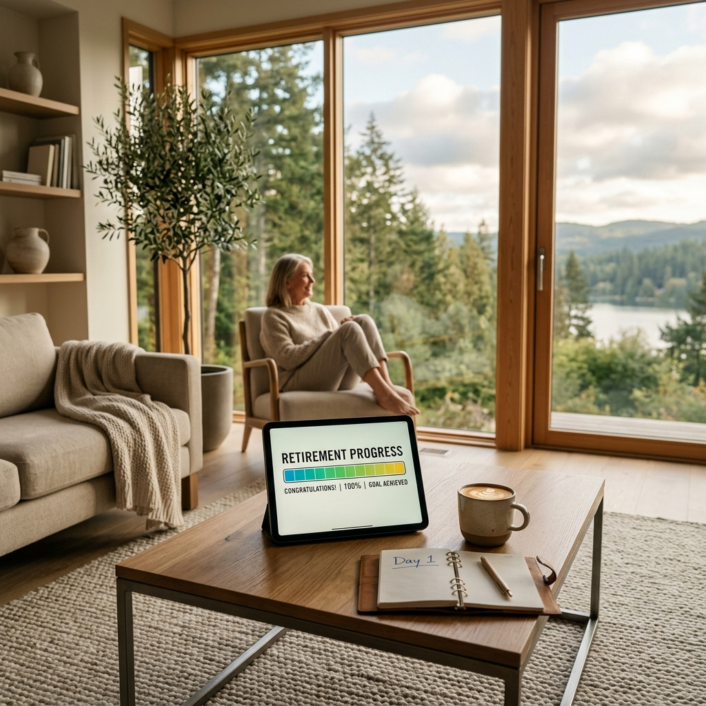
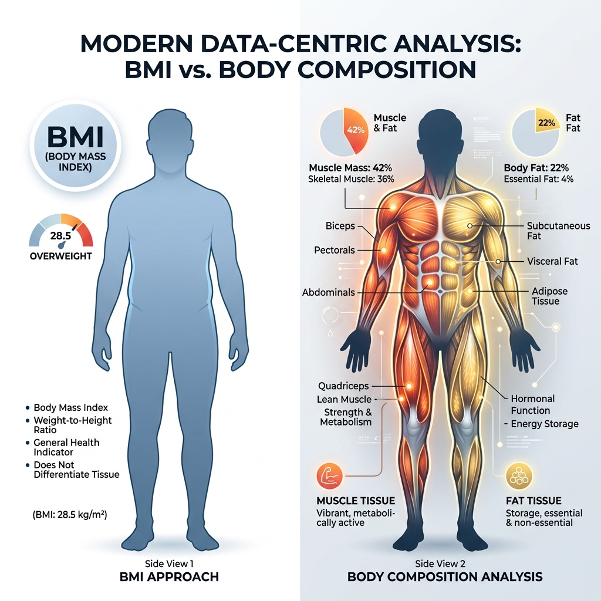
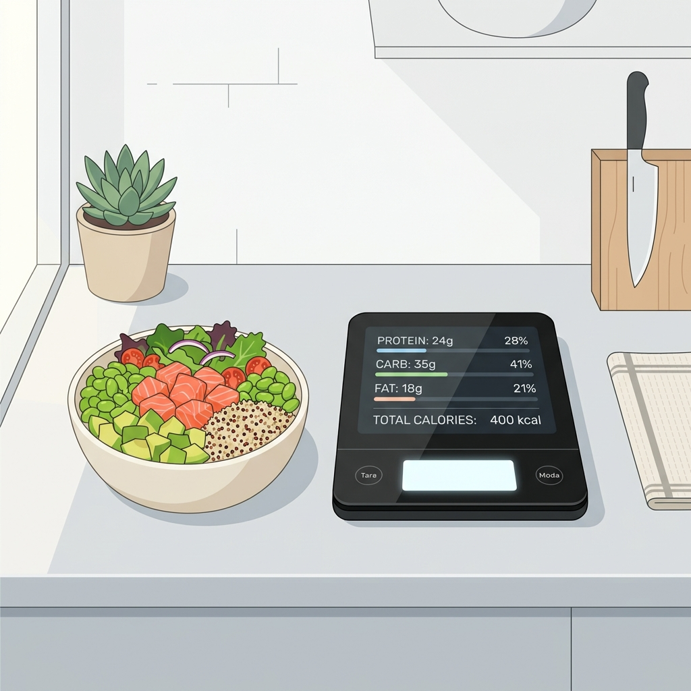
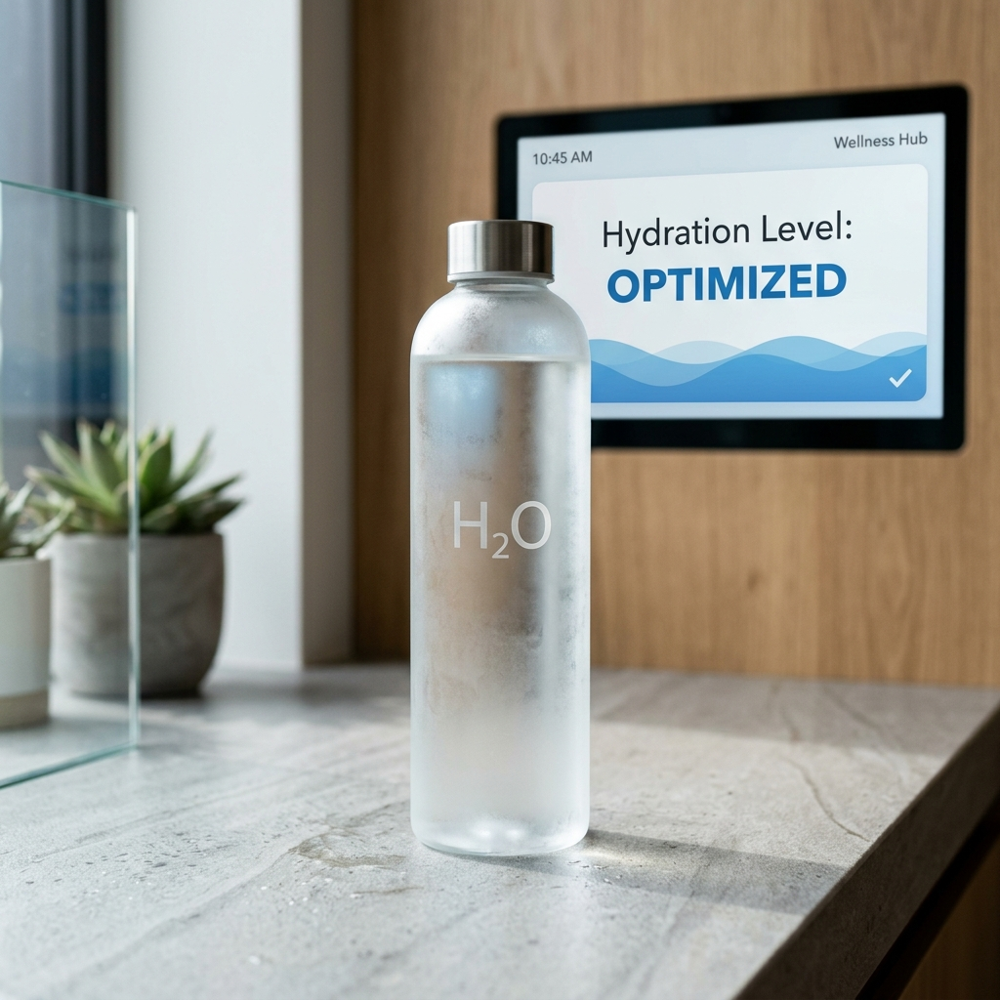
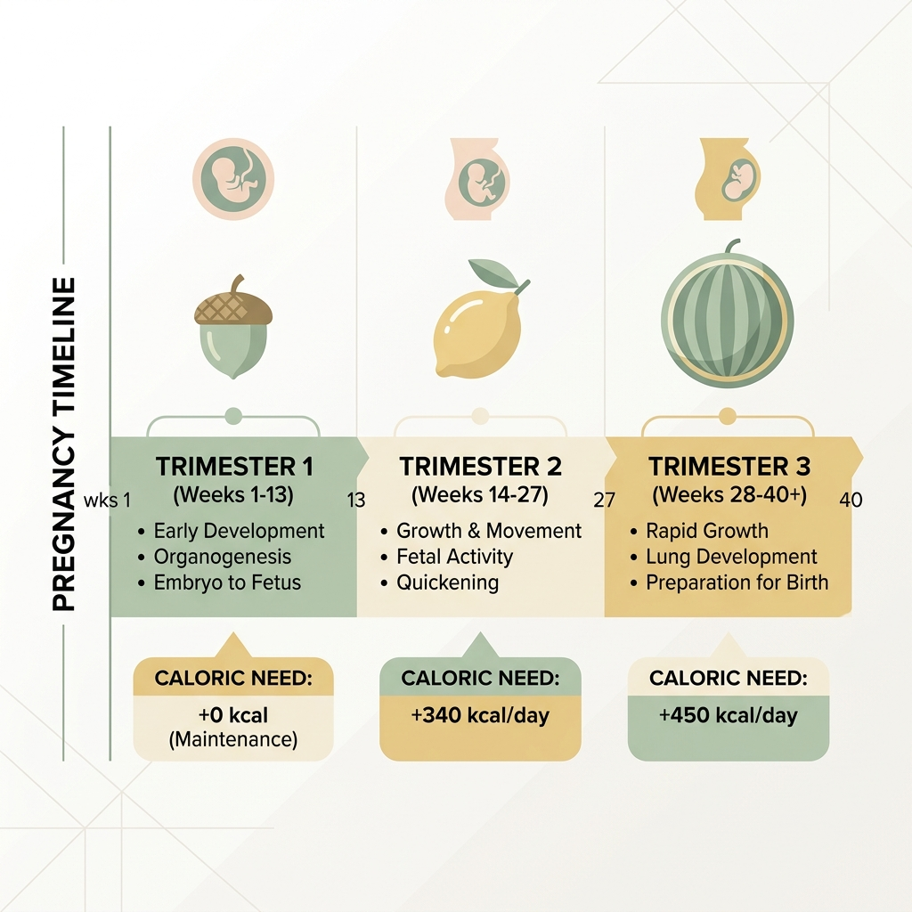
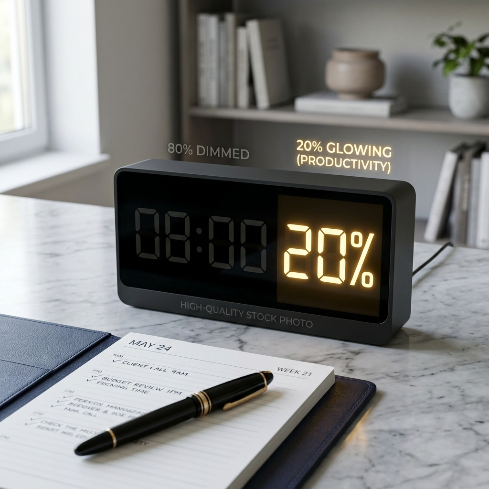
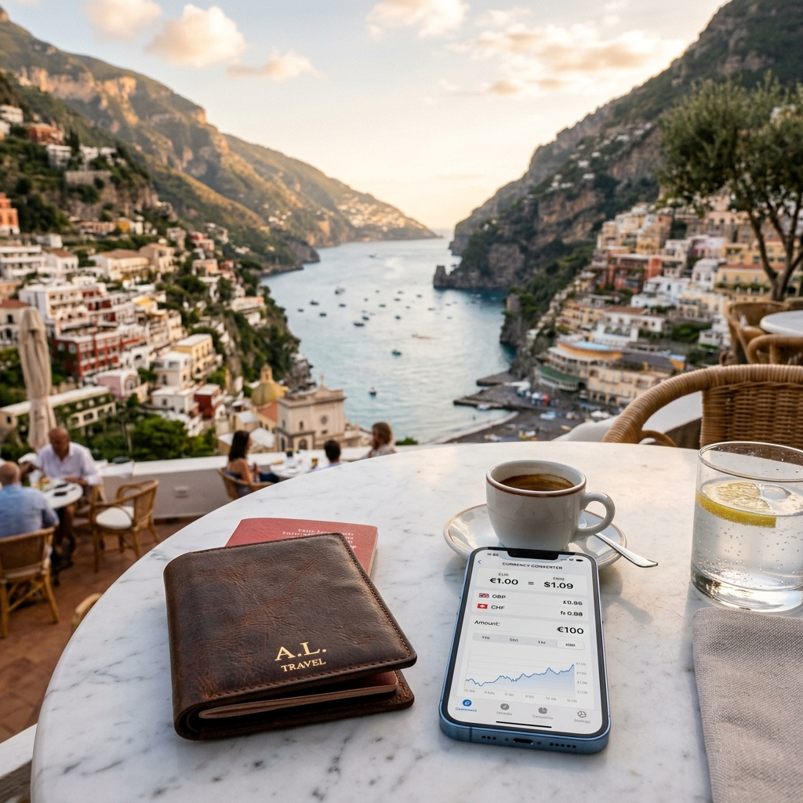

The Math of Everything
Professional guides, deep-dives, and technical resources to help you master your finances, health, and productivity.
The 2026 Guide to Compound Interest
How to build a $1M portfolio starting with $500 using geometric progression.

High-Rate Mortgage Strategies
Practical ways to save $50,000+ in interest using amortization hacks.

The 2026 FIRE Exit Guide
Finding your Financial Independence number using the 4% Safe Withdrawal Rule.

Crypto vs. Stocks: ROI Math
A cold-blooded mathematical comparison of risk and volatility drag.
Side Hustle Profitability
Calculating your Effective Hourly Rate and true business ROI.

Body Fat & Composition
Why Body Fat % is superior to BMI for health and longevity tracking.

Macro-Nutrients 101
Mastering Protein, Carbs, and Fats for precision body recomposition.
Biological vs. Chronological Age
Quantifying your rate of aging using biomarkers and lifestyle metrics.

The Science of Hydration
Beyond 8 glasses: Calculating your real fluid and electrolyte needs.

The Math of Pregnancy
Understanding timelines, gestatonal growth, and absolute risk ratios.
How Statistics Lie
A guide to data literacy: spotting misleading charts and survivor bias.
Interior Design Geometry
Using the Golden Ratio and the 60-30-10 rule to create perfect rooms.

The Pareto Principle & Time
Identifying the 20% of tasks that drive 80% of your results.
Physics in the Kitchen
How thermodynamics and surface-area ratios create perfect flavor.

Travel Math: Lifestyle ROI
Quantifying Geographic Arbitrage and the true cost of slow travel.